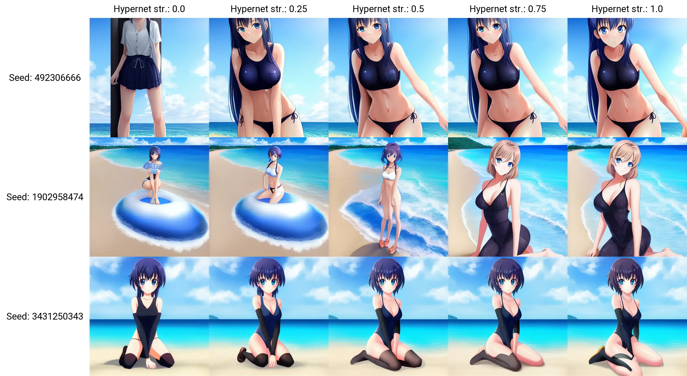

Introduction
This page is dedicated to storing all the tips, tricks and information that I learn about Stable Diffusion and Waifu Diffusion. I copied some parts from other authors and I will credit them where applicable/possible.
As I am more interested in Waifu Diffusion and anime art styles, this guide will be mostly based around that model. However, all the information here should still apply to any kind of ai generation. I will also refer to features that are available on the webGUI by AUTOMATIC1111, which may not be available in other GUIs.
Getting Started
Stable Diffusion is open source, meaning you can use it however you like and there are many methods for how to use and install Stable Diffusion. If you're more techinically minded, you could even use Stable Diffusion completely with commandline commands. There are even methods for running Stable Diffusion in the cloud, most notably Google Colab. This guide will focus on methods for running Stable Diffusion locally on your own PC that doesn't require too many steps or technical knowhow to get started.
AUTOMATIC111 WebGUI
Please be aware that at the time of writing the AUTOMATIC111 Github repository does not contain a license of any kind. This legally means by default all of the code in the repository is owned by the individual people who have contributed code. This means that any contributer could take down the repo with a DMCA request as their intellectual property is being used. It is an unlikely event, but a possible one & without Github's terms of service, it would not even be legal to use the WebGUI. (It may technically not be legal right now, I'm not sure, I'm not a lawyer). For more information on this, visit Pull Request 4222, Issue 2059, & Information on no license. Use at your own risk.
AUTOMATIC111's webGUI is the most popular locally run UI for stable diffusion, mostly due to the ease of installation and how quickly it is updated with new features. Following Voldy's Guide you should be able to install it without much issues.
Rentry has made an excellent guide on how to get the AUTOMATIC1111 webGUI to work locally on your computer. Voldy's Guide has a lot of good information on getting started with Stable Diffusion and Waifu Diffusion.
I have created my own guide based on Voldy's that hopefully provides more information and a guide on how to install on macOS M1/M2 Macs.
There are so many features available in this webGUI that i've created a seperate page to properly display features related to this GUI. AUTOMATIC1111 WebGUI page.
NMKD GUI - One Click Installer
If following the guide above for AUTOMATIC111's webGUI is too difficult or if you're just looking to try a different GUI, a person by the name of N00MKRAD on itch.io is currently developing a standalone program to run stable diffusion that includes the core features you would want and includes dreambooth training for 24GB Nvidia GPUs as of 17/10/22, they say they are trying to reduce the VRAM requirement as well. While this tool is provided free of charge, I recommend donating to support the development of this neat program.
Once you download the program, all you need to do is unzip the file on your computer and run the
My guide will still focus more on the AUTOMATIC111 webGUI as it is usually the quickest to implement new features and has the most features to begin with, but the information should directly apply to other GUI's as they are all based on Stable Diffusion.
You can download the NMKD GUI at its itch.io page.
DiffusionBee - SD for M1/M2 Macs
While not as feature rich as Windows or Linux programs for Stable Diffusion, DiffusionBee is a free and open source app that brings local generation to your Mac products. It is the only MacOS program that I have currently found that installs as easy as any other app on your Mac. Simply download, open & drag to your application folder. This is by far the best installation flow of any Stable Diffusion program on any platform, it will even automatically download the Stable Diffusion model to get you started. The only downside is that is it incredibly bare bones in functionality at the current time. I am also unsure how many features are planned for this program as there is not a lot of information available on their website.
Current features include, Text to Image, Image to Image and Outpainting. Those should be enough for anyone who is wanting to dabble in image generation and its ease-of-use makes up for its current lack of features.
On 04/11/22 Diffusion be was updated with more features including inpainting, upscaling and improvements to all other features.
Performance feels a lot slower than anticipated as well considering I am testing on an M1 Macbook Pro with 32GB RAM, it takes a considerable amount of time to render 1 image compared to my Windows PC with a Nvidia RTX 3080 with 10GB VRAM.
Requirements
You can download DiffusionBee at its official website.
Image directory
If you're looking for where your images are saved, they are in a hidden directory at
Models directory
The Stable Diffusion model is located at
Models
Models are what you use to generate images. Without models, you couldn't create anything. All models are
There are quite a few models to choose from, and more popping up all the time. Anyone with the correct computer specs and knowledge can create their own models, so as the field of AI generation continues to grow, I'm sure there will be models specialised in many genres of imagary. For now though, Stable Diffusion, Waifu Diffusion and Novel AI are king. I won't be covering Novel AI in my guide as it is a paid service and the focus of this guide is for open-source projects.
For more information on some of the top models, you can visit the models page.
Model Information
Float16 vs. Float32
As per Rentry.org.
Model Version
For some models, there are multiple versions of the same model available for download. There may be versions like "pruned" of "ema". Ema models are ones that are used for re-training/ continuing to train the actual model and these files will be the largest with all weights and biases and other data inside them to properly train the model. You will not need to use ema models unless you are training the model itself, they provide no extra quality to generated images. You should choose the smallest file size model when you are only wanting to generate images, as that will take up a lot less VRAM, meaning you will be able to generate more images and faster. There is minimal difference in quality between the smallest file size model and the larger ones.
VAE - Variable AutoEncoders
VAE's are a section of diffusion models that processes the encoding & decoding of data and helps to prevent overfitting. All model files have their own VAE already and have been using the original VAE from Stable Diffusion. Recently (around 26/10/22) new VAE's were released that are suppose to be an improvement on the original VAE.
You can find these VAE files here. Download the ft-MSE version for 'diffusers' models and the ft-EMA version for 'original' models. If you use the AUTOMATIC1111 WebGUI, all models are of the 'original' type.
To use this VAE file, simply rename the file be the same name the .ckpt file you want to use it with but change .ckpt to .vae.pt like
Alternatively you can also use commandline args in the webui-user.bat file and add the arg
If you have added the VAE correctly, when you relaunch the webGUI, a line similar to
For more information on VAE's Nerdy Rodent has made a good Youtube video about the improved VAE versions.
More VAE's
Waifu Diffusion has a work in progress VAE available in the 1.4 Huggingface repository. As 1.4 is no where near completion, I believe this VAE is experimental but does improve anime results.
Sampling Methods
There is not a lot of information out there on what exactly sampling methods are and how they process images differently, but the results are generally consistent between methods with only minor differences. The model you use for generating images will impact the quality of an image much more than the sampling method you choose. That being said, there are subtle differences in every model that become apparent if you compare the same seed & parameters using each method. It is up to you to experiment and find what works best for you. For more information on the indiviual sampling methods, go to the sampling methods page.
Sampling steps
Sampling steps are how many cycles the AI will take to generate the image. While you might think intuitively that more steps will be a better image, that is not always the case. On top of this, for any sampling method that isn't an 'A' type, the image will change very minimally after roughly 300 steps. There are details added/ changed, but it is barely worth the extra processing time.For 'A' type methods, the image will change a huge amount dependant on the step size. The image will change completely if you were to render a 100 step image and a 300 step image. As with non-A methods, the detail and quality can improve with higher step counts, but it is still very minimal changes and on top of that, the image will be completely different than if you were to render the same seed at a lower step count, making it more time consuming to get the image you want.
Non-A methods on the otherhand can be quickly generated at a low step count, and once you find a image you love, you can take that seed and generate it at a higher step count for better quality without a massive change in the image characteristics.
To prove that extremely high sampling steps do not improve you image, I have run a small test of 20 - 5000 samplings steps so you don't have to. See the results below.
Euler - Example of a consistent (deterministic) sampling method

Euler A - Example of a changing (ancestral) sampling method

The only time where a large amount of sampling steps may be useful is if you're trying to create more advanced prompts using prompt editing, alternating prompts or using embeddings that could require more processing time due to the complexity of the prompts.
Prompts Overview
Prompts are how you tell the AI what to generate. You don't need to add many prompts to generate a good image, and sometimes adding too many prompts will usually mean the AI will ignore some of them. You should try to give the AI prompts that best describe your image in the least amount of words that have the strongest affect on the model. Figuring out these strong but short prompts is the challenge of image generation and will take lots of trial and error.
There are also a few helpful and important tips to know to assist in getting the image you're looking for like prompt order, parenthesis, combo words, and more that will be explained in more detail below. You can mix and match all of these tips to help refine your image as much as possible.
More detailed information about prompts can be found on the Prompts page.
A good Reddit post about prompts I've found Prompting: What you need to know (Part 1).
Another good post by u/StoryStoryDie
CFG Scale
The CFG Scale (Classifier Free Guidance Scale) is a option available for txt2img and img2img. In simple terms, it lets you specify how strictly the AI should follow what you have written for your prompt. A high number means it will follow your prompt as accurately as possible while a lower number will allow the AI to loosely base its generation on your prompts and produce more varied/ random outputs.
In the example below, I have generated images for a specific seed in Waifu Diffusion 1.3 for all CFG values from 0 - 32. As you can see, at 0, the AI basically generates a random mess of imagery, but as it moves away from 0, it starts to form a more coherent image. As it goes beyond 20, it starts to create more glitches and artifacts as the AI tries to conform to the prompts as strictly as possible.
I have not done enough testing with this, but I assume that a higher CFG could produce good results if you provided prompts that described your image perfectly within the dataset the model has been trained on. In general though, I would keep the CFG value between 5 - 20. Of course experiment with this yourself and try the extreme values out as experimenting is what this is all about.

Image Dimensions
As far as I know, all diffusion models have been trained on 512x512px images. This means that those dimensions are the best dimensions to use when generating your own content as the model is most familiar with that.
It is very obvious when you try to generate images in different height or width than 512x512 the results can be much worse and sometimes completely unusable.
There are ways to combat this and improve image quality, but the AI still struggles in most dimensions, especially landscape images.
Creating larger square images
Using the AUTOMATIC1111 WebGUI, the txt2img UI has a "highres. fix" option, it isn't a perfect solution, but it can improve images of higher resolution. Together with this, you should use the "Resize seed from width/hight" options that are available in the Extra seed section. If you set the resize size to 512x512 the AI will try to create the same image it would have created at 512x512, but instead it will be created at your new resolution. It is recommended to keep the same aspect ratio for the inital size and large size, as changing the aspect ratio will change the image output.
Be aware that the larger the image, the longer it will take to render and the more VRAM is required to process the image. On top of that, using the method stated above will actually generate 2 images, one at the initial 512x512 size and then another image at your higher resolution which will add even more time to your render.
Creating landscape images
Landscape images are the hardest of the 3 aspects to create and will generate duplicate people, conjoined people or a complete weird jumbled mess at the worst of times. It isn't a hopeless cause though, it is still possible to create a decent images or an image that is close enough that you can use inpainting to fix the issues.
I personally wouldn't recommend trying to create a larger image mode than roughly 800px wide and you should keep the height at 512px so the AI has one reference point it is familiar with.
Creating portrait images
Portrait images are generally easier to create compared to landscape. If you're having trouble getting a full body image in the square aspect ratio, it may be helpful to try changing the size to portrait. Portrait images can still generate more glitched art than a square image, but when it does work, it goes a great job on character bodies. It is recommended to keep the image width at 512px so the AI has one size it is familiar with.
Img2Img
Img2Img is a useful feature that allows you to take one image and apply the AI model on top of your image. You can choose to influence the original image subtly like a style filter, or intensly by changing the original image in drastic ways. One example of a drastic change would be to take an image of simple shapes and using the AI to turn it into some detailed picture.
Inpainting
Inpainting can be a very useful tool for fixing up errors in your generated image, or to refine your image. There are a few ways to use inpainting, but the most common way is to use some sort of mask to select the area of the image you want to modify and play around with settings until you get what you're looking for.
You can either draw the mask in the webGUI directly or provide a seperate mask image which would me some sort of black and white image with black being the areas you want to inpaint.
A new update on 28/10/22 the WebUI added a option in the settings tab named "Inpainting conditioning mask strength" which allows you to reign back the variability of the generation to retain more qualities of the original image even with a high denoising strength setting. This is great if you would like to apply a different style to your image but don't want it to completely change the subject or composition of the image. For more information a Youtuber called Patrick Galbraith posted a good video on Conditioning Mask Strength.
A good starting point for inpainting is to use the settings as follows:
Start with the exact same prompts that you used for the original image and add/remove prompts as you see fit. If you are unsure on the original prompts, you can use the PNG Info tab to find out that infomation.

Two examples of using the 1.5 SD inpainting model to clean up managa panels by remove text from the image.
Outpainting
Outpainting allows you to take an image and extend its borders in any direction and the AI will attempt to generate a new piece of the image from scratch. I have not played around with outpainting using the webGUI too much yet, mainly because it is quite cumbersome with the current UI and I have not been able to achieve great results. There are other UI's available that are much more flexible and user friendly, but they are also usually a paid service.

X/Y Plotting
X/Y plotting is simply a way to generate a grid of renders that combine 2 parameters in different combinations. This is more useful for researching and comparing outputs than using it for artistic purposes. It is available on the webGUI under both the txt2img tab and the img2img tab under the "script" drop-down menu options. Once selected, you'll be greeted by more options.
The first section of the X/Y plot is where you choose the parameters you want to set as your X and Y axis. You can choose from a list of options for X and Y respectively and then enter comma seperated values in the corresponding inputs to specify what you want to set the x and y axis values to. Each option for an axis will have different values you can set for that option, for example, the sampler axis can only be set to a sampler name, while the seeds axis can be set to an integer number or -1 for random. If you set an axis to some invalid value, it won't even attempt to process and throw an error in the commandline console.
Be aware that the more values you add, the more columns/ rows you are adding which will exponentially add images to the render. A 2x2 grid will create 4 images while a 5x5 would create 25. If your render settings are high, that can take a considerable amount of time.
There are multiple ways to enter column and row values. If you are inputting numerical values there are some formats you can use to make things easier. Examples below are taken from AUTOMATIC1111's Github page.
1-5 = 1, 2, 3, 4, 5
1-5 (+2) = 1, 3, 5
10-5 (-3) = 10, 7
1-3 (+0.5) = 1, 1.5, 2, 2.5, 3
1-10 [5] = 1, 3, 5, 7, 10
0.0-1.0 [6] = 0.0, 0.2, 0.4, 0.6, 0.8, 1.0
The sampler option will only work if you specify the sampler names correctly. Below is a list of the names
Below is a visual example of an X/Y plot. As you can see, it generates all possible combinations of the set axis values and is a create way to compare things like samplers, seeds, step counts and many other things.

If you'd like to recreate this exact grid, see the settings below.
Prompts:
Negative Prompts:
Other parameters:
XYZ Plotting
Similar to X/Y plotting, XYZ plotting is a very new feature just released on 17/10/22. It however, is not accessed the same way as X/Y plotting and is displayed differently since it is trying to display 3 dimensions of data instead of a 2 axis grid.
Training A Model
There are several ways to currently train your own model or extend the use of a pre-existing model. Each fill affect your renders in different ways and be more effective for certain tasks you're trying to achieve. Of course if you are trying to generate images for something very niche, training a model from scratch would be your best method, however that requires a large amount of data, processing power and time so the average person would not be able to do that reasonably. Thankfully, there are smaller ways to influence the AI models without redoing everything, below are a few methods.
I have not dived deep into training models due to the data and processing requirements, so my current knowledge is only from what I have learnt from other sources. Due to this, please do your own research as mine may be inaccurate and is just to give you a basic idea of the concepts.
Preparing Data
No matter how you're training the model, there is one thing you must have; data, more specifically, images to train on. Collecting these images can be time consuming, but the more images you can give the model to train on, the better your results will be. When training any model, you must make sure all of your images are 512x512px in size as that is the image size the architecture was created on. You must also be sure to have a good variety of images with different lighting, poses, expressions, etc. The more variety you give your model, the better it will perform in a wider range of situations.
For best results, make sure there is no text in images, they are at least 512x512 in size with no compression artifacts or blurriness & usually only have 1 subject/ character in the image.
My data collecting process
Obviously you can collect data however you like, but this is my current method that is a really fast way to get a lot of high quality images and prepare them to be processed by the training AI.
Please note that Pintrest does flag accounts as spamming if you pin/like too many images at once. I have not found a reliable way around this but a spam block will usually last less than 24 hours.
I have encounted issues using PinDown where it will not download images at all. I believe it could be related to spam blocking that Pintrest has in place. To circumvent this, allow the PinDown extension to be available in incognito tabs and open a new incognito tab. Log into Pintrest and go to your board. PinDown should work properly now. You will know if PinDown is working because some images from your board will display in the PinDown banner.
If you are still having problems, try uninstalling and reinstalling Pindown and that seems to also fix the problem.
You can also choose to preview what the AI has chosen to crop and move the crop box to your liking on every individual image which is great to make sure every shot is perfectly cropped without having to manually crop every single image.
It can take quite some time to crop images if you have a large amount, and if you accidentally include an invalid file type in your batch, it will cause an error and you will need to restart the cropping process. I would stick to using PNG and JPEG/JPG images to be on the safe side.
Once it finishes processing, a zip folder is downloaded so you have all of your images in one place ready to be trained on! When you extract the zip file, be sure to extract it in an empty folder as the zip file does not have all the images within its own folder. The results can vary, but it generally does a good job of cropping to keep the face of a character in frame. The results aren't perfect, but it is far less time consuming than manually cropping hundreds of differently sized images.
Aesthetic Embeddings
Aesthetics are a new feature added to the webGUI on 22/10/22. There is not a lot of information on how they influence a model, but from what I have learnt, they are a new way to add a style to a model that doesn't need to modify the model directly and provides more control over the output image. If you're using the webGUI, you need to add the Aesthetic Embedding seperately as it is considered an "extension" which is a recent (24/10/22) addition to the webGUI that allows for expanding the GUI in a more modular way.
Aesthetic Embeddings are like an image prompt for the AI instead of a traditional text prompt. The AI will use the image prompt as a basis for the image, and as it is an image, the AI has a much better idea of what you are wanting the generated image to look like compared to just explaining your image through text.
Aesthetic Embeddings are not the same as Textual Inversion ones, so you need to create a seperate Aesthetic Embedding in the training tab of the webGUI. You can also only use one aesthetic embedding at a time compared to textual inversion embeddings where you can use multiple prompts at once. On the plus side, aesthetic embeddings only require a few images to train on for them to influence the AI a lot.
This Youtube video by koiboi does a great job of explaining Aesthetic Embeddings and other basics of Stable Diffusion in a thorough, information way.
Textual Inversion
Textual Inversion is a way to add new individual words/ phrases to any model, you can then associate that word with a collection of images. It is better to train a word that the model would already have some familiarity with. For example, training the model to learn a new anime character would work really well since the model already knows how to draw people, you are simply adding a new specfic person to the dataset. Textual Inversion works best to expand upon what the model already does and adds new objects or characters to your model.
Textual Inversion files are called Embeddings, the file extension is
A new update on (16/10/22) by AUTOMATIC111 has added the ability to use special images as embeddings themselves which is a really neat feature. These images can be in a few different formats like .png & .webp and display the result of the embedding as the image along with the prompt to use & all the data required for the embedding to work. All you need to do is place the image in the embeddings folder as you would with any other embedding.
Embeddings can be very influential on your image output, so it may be good to reduce its influence with square brackets or some other method. You can also use embeddings as negative prompts which I don't think many people have explored yet, but could be extremely useful to prevent certain glitches from happening.
One advantage to Textual Inversion compared to other training methods is that it requires the lowest amount of VRAM (8GB minimum) and will also produce the smallest file size (2-30kb). However, it is also the worse performing training method but results can still be useable and produce good results.
Be aware that embeddings work best with the model that it was trained with, so if you change models and try to use your embedding, results may not be as cohesive.
I have not attempted to train any embeddings myself, but from what I have seen online, it can be an easy process and create good results even with less than 20 images to train on.
There is a more detailed explaination on how Texture Inversion works within AUTOMATIC111 webGUI at the link AUTOMATIC111 Textual Inversion
If you have created your own embeddings, please feel free to share it with me so I can add a link/ download on this site for others to use.
For my guide on how to use Textual Inversion go to my Embeddings Training page.
List of embeddings
I am working on creating my own embeddings and sharing good quality ones that others have created. Go to Embeddings page for more information.
Hypernetworks
Hypernetworks are a very new concept and has even less documentation available on them at the current time. From what I know, Hypernets actually inject the chosen prompt into the last stages of the models processing flow. In vague terms, this means that in the final "steps" of rending the image, the Hypernet prompt is added and influences the resulting output more than if it were to be used right at the start with all the other prompts like how Textual Inversion works (As far as I know).
To train a Hypernet, you do require at least 8GB of VRAM on your graphics card.
Credit goes to Reddit user u/vic8760 as I've paraphrased some comments he made on this subject.
I have played around with Hypernetworks and Textual Inversion a bit now, and from my preliminary testing, I believe hypernetworks are much better at refining pre-existing models to create better looking art, textual inversion seems to be better for inserting unique objects/ characters/ concepts into the model due to its modularity, however I have not been able to train a good embedding yet.
Hypernetworks on the otherhand train much faster than embeddings and improve your model greatly if you have a good dataset to train on. Ultimately all training methods rely on the quality and quantity of your data. The one drawback to hypernetworks is that you can only have one hypernet applied to your rendering at one time which is much more limiting compared to embeddings. This is why I suggest hypernets should be for stylistic and refinement reasons while embeddings should be used for specific things you want the model to generate. I have not had the chance to play with Dreambooth yet, but I would assume it is the best of both worlds considering it can create full standalone models.
Below is a test of a small anime hypernetwork I trained with roughly 1.5k unique images and the strength of the hypernetwork on the X axis. The effect of the hypernetwork is sometimes subtle and sometimes strong. Further testing and training is needed before I can give conclusive thoughts on how well hypernets work.
As always renty.org has a great guide on hypernetworks.
I have found a good Youtube video detailing some of the process for working on Hypernets, although they do not use the AUTOMATIC111 webGUI. HYPERNETWORK: Train Stable Diffusion With Your Own Images For FREE!
Dreambooth
As of 08/11/22 there has been a WebGUI extension
released that allows you to run low-VRAM/ CPU processing Dreambooth within the WebGUI. This is a huge feature that opens up custom model creation to practically anyone. One caveat is that it does take considerably longer to train the model if you're on lower end systems. A basic overview of how to train a model is on the GitHub page. I will add my own information here once I am able to dive into Dreambooth more.With Dreambooth you can practically create your own image model in a much faster time (less than an hour) with much higher quality compared to using something like Textual Inversion. As Dreambooth does create its own models, they are .ckpt files which could be a bit cumbersome if you want to have lots of little variations, along with this the file sizes of Dreambooth models are much larger as they are considered full models. this is where the modularity of Embeddings shines and is much more user friendly to train and generate with.
There is a Dreambooth GUI by Reddit user u/wuduzodemu that provides an easy install and training interface. I am yet to test it myself, but it looks promising and can also run on 10GB VRAM compared to the usual 24GBs required to train Dreambooth locally. This is a huge improvement and hopefully things like this keep getting more accessible for everyone. To download the Dreambooth GUI visit this Github page.
Upscalers
Since you will generally be creating images with dimensions 512x512, you may want to upscale your output to produce higher quality images or simply scale up to make it more useable in other programs.
the AUTOMATIC1111 webGUI comes with a few good upscaling options and includes options to automatically upscale images after generating them. Although its upscalers are great, it can be a bit obtuse in how its layed out and what the best settings are for upscaling images. Due to this, I've listed some other upscalers that I know of in case you're interesting in trying them out as alternatives.
WebGUI Upscalers
There are many different types of upscalers to choose from within the WebGUI. I do not know a lot about the technical details of each upscaling model but all of them produce good results. The first time you use an upscaler model it will be downloaded automatically.
I have personally had trouble downloading the LSDR upscaler with an error that says
Waifu2x Extension GUI
Another simple GUI software that specialises in upscaling of anime imagery, although it can work with any images. Compared to AUTOMATIC1111's webGUI, Waifu2x has a lot more features to fine tune your upscaling with different models, parameters and more technical settings. Another advantage to using Waifu2x is that it can upscale videos with the same precision as images which is a feature that I don't believe AUTOMATIC1111's webGUI has implemented yet (although knowing his pace of adding features its bound to happen eventually).
You can visit Aaron Feng's Itch.io page for more information and a download link.
Topaz Labs Gigapixel AI
This is a paid software ($99USD at time of writing) so it doesn't fit with the open source theme of my guide, but I felt it was worth adding as it is one of the more user friendly options for more customized upscaling with multiple unique models available, multi-view rendering, batch upscaling and more. While its upscalers are more skewed to photography than artistic styles, it can still produce good results. As its a paid service (one time fee with option yearly fees), you can expect consistent updates and support using this software.
You can visit Topaz Lab's official website for more information.
Current model limitations and issues
Stable Diffusion and its alternatives are not perfect models. There are many limitations that all depend on the dataset they were trained on, how long they were trained and the vocabulary that is knows. Due to this, there are very obvious elements that all models stuggle with, but they do continue to improve with more training and new features.
Hands
Hands are one of the most notorious problems for the AI. There have been improvements to hands in the newest 1.3 Waifu Diffusion model, but it still has a long way to go. There are no major prompts that I have found to improve hand art. The AI will usually try to hide hands behind backs, of screen or in any other way it can to avoid drawing them. This is only a suspicion, but I believe it may be due to real artists avoiding drawing hands, and therefore, the AI would not have a large enough dataset of drawn hands to know how to do them properly. Although, Stable Diffusion also has trouble with hands in photographic imagery, but shouldn’t have the same dataset problem, as there would be plenty of images of real people's hands to train on. There is some hope though, with platforms like NovelAI achieving excellent hands and other features Stable Diffusion falls flat on. But this gives hope that Stable Diffusion can reach that same quality, eventually.
Male Characters
This limitation mostly relates to Waifu Diffusion, as Stable Diffusion is very good at creating male characters, however Waifu Diffusion has very obviously been trained on mainly anime women which makes male characters look quite bad compared to what the AI can generate for female characters. With WD 1.3 there have been improvements on male characters, but it could still be improved with more variety and detail for male characters.
Distant Characters
All models are quite good at generating characters close up, usually from the bust up, but once you try to get a full body shot or include scenery it can cause problems. The futher away a character is, the less likely they will be generated properly. It's not a solution, but the AI can generate distant characters better if they are portrayed as a silhouette as it doesn't need to create details like the face.
NSFW Art
Obviously NSFW art will be diffcult for most models as they usually won't be trained on a lot of NSFW data. There are a few specialized NSFW models like Hentai Diffusion, but while they are better at lewd poses, kinky imagery and BDSM art; they usually have some kind of drawback like poor facical features, backgrounds and perform even worse at details like hands, feet & eyes.
You can create really good NSFW imagery with a lot of time and patience and finding the correct prompts, but results will vary a lot and the more niche your NSFW image is, the less likely it will create good results.
Credits/ Resources
- https://huggingface.co/hakurei/waifu-diffusion
- https://github.com/AUTOMATIC1111/stable-diffusion-webui
- https://rentry.org/voldy
- https://cyberes.github.io/stable-diffusion-models/
- Youtuber: Nerdy Rodent Video: Stable Diffusion Prompts
- Youtuber: Royal Skies Playlist: Learn Stable-Diffusion (FAST!)
- Reddit Post: AUTOMATIC111 xformers cross attention with on Windows. Author: u/Der_Doe
- Reddit Post: New feature in Auto1111 - Alternating prompts. Author: u/SnareEmu
- Stable Diffusion Guide by wiki.installgentoo.com
- https://chara-zokusei.jp/en/question_list
- Youtuber: enigmatic_e Video: Stable Diffusion IMG2IMG settings Pt. 2 (Consistent Animations)
- https://unideer.notion.site/Perspective-Research-NovelAI-9fb472f4faeb492d8e0b095d2efa0796
- Youtuber: nerdy rodent Video: Textual Inversion - Make Anything In Stable Diffusion!
- Sampling Method research by u/Remove_Ayys
- https://gigazine.net/gsc_news/en/20221012-automatic1111-stable-diffusion-webui-deep-danbooru
- Youtuber: MattVidPro AI Video: Easy Dreambooth AI Tutorial
- Youtuber: ChamferZone AI Video: Stable Diffusion - Master AI Art
- Youtuber: bycloud Video: AI Generated Art Is Getting Out of Hand
Get in touch
If you'd like to reach out to me for whatever reason, feel free to contact me through any method below. I'd love to see what you create, share information about generating images or have any other Stable Diffusion related things you'd like to share with me.